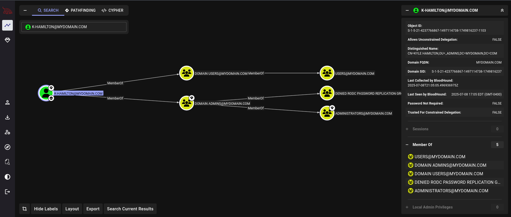
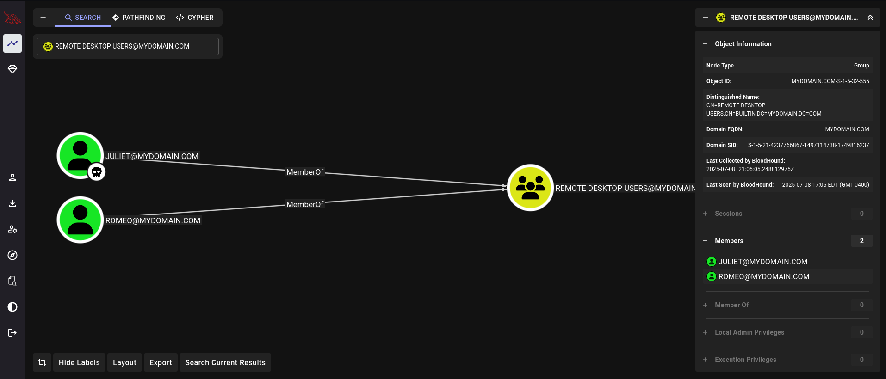

🕵️♂️ AD Enumeration with BloodHound
This log outlines my process of performing Active Directory enumeration in my home lab using BloodHound and bloodhound-python. This included installing Docker Compose to host Bloodhound, connecting the Kali and Windows server machines using bloodhound-python, and pentesting using evil-winrm and Wireshark.
Lab Setup and Networking Configuration
After installing Docker.io on the Kali machine, I ran the following command to have the capabilities to run Bloodhound within the VM: curl -L https://ghst.ly/getbhce | sudo docker-compose -f - up. With the admin password the Docker instance produced, I was able to gain access to the Bloodhound tool to start enumerating from the AD environment.
A problem I ran into while running Bloodhound with Docker was it was taking too many resources within the VM to run so I had to restart the VM with more CPU cores and memory in order to run everything and it ran perfectly after the change.
Once I got Bloodhound running successfully, I moved onto using bloodhound-python to start enumerating AD data from the DC machine. To connect Bloodhound with the DC machine I used this command bloodhound-python -u k-hamilton@mydomain.com -p YeetSkeet1! -dc dc.mydomain.com -d mydomain.com -c All --dns-tcp to gain access to the environment under the main admin account.
Upon executing this command, I got an error saying that there was an invalid server address being used within the command. The two machines have two network adapters (NAT and Host-Only). To avoid conflicting IPs during resolution (e.g., DNS returning both 172.16.0.1 and 10.0.2.15), I disabled the NAT adapter to isolate domain traffic to a single internal network. Kali Linux was connected to the same Host-Only network to interact with the DC.
After resolving the adapter conflict issue, the program successfully outputted the json files that contained the enumerated data from the environment, as shown in the screenshot.
Analyzing AD Enumerated Data using Bloodhound
After obtaining the json files, I imported the data into the Bloodhound tool and started digging deeper into the enumerated data. Bloodhound collected data about users, groups, computers, sessions, ACLs, and trusts, outputting JSON files for visualization in the BloodHound GUI. I started by performing a lookup on the admin account K-HAMILTON@MYHDOMAIN.COM and found general data about the user and account as well as the different groups the account was a part of within the AD environment.
After experimenting with the admin account, I delved into pentesting the environment by performing a lookup of the group REMOTE DESKTOP USERS@MYDOMAIN.COM to see which users are insecure to allow RDP access from a rogue machine. I marked the JULIET@MYDOMAIN.COM account as my attack vector to pentest the AD environment.
Pentesting using evil-winrm and Wireshark
To utilize Bloodhound in a pentesting environment, I wanted to use the pentesting command line tool evil-winrm within the Kali machine to gain access into the AD environment via an insecure user to expose vulnerability within the AD environment.
As seen in the screenshot, I was able to gain access to the Juliet user's command line and therefore able to manipulate the user within the AD environment, deeming that account to be insecure.
From a defending machine/blue team perspective, I utilized Wireshark on the DC machine to analyze the incoming traffic from the rogue machine gaining access to the AD environment. After using the following filter tcp.port == 5985 || tcp.port == 5986, I was able to analyze evil-winrm tagged traffic
and found the specific packet responsible for authorizing the Kali machine into the environment. After going into the packet contents, I was able to find that the Juliet user account was the insecure account being accessed from the rogue machine.
Lessons Learned
- Importance of isolating network traffic in AD lab environments
- How dual NICs can interfere with DNS resolution and LDAP binding
- Kerberos ticket acquisition and troubleshooting with
kinitandklist - Using
bloodhound-pythonto enumerate AD objects via LDAP/Kerberos - Firewall and port availabitliy troubleshooting using Powershell and dig/nc commands
Challenges Encountered
- LDAP bind failures due to DNS returning multiple IPs for the DC
LDAPSocketOpenErrorcaused by Kerberos misconfiguration and incorrect interface resolution- Had to disable the NAT adapter and ensure static addressing on the Host-Only network
- Resource overconsumption when running docker compose and Bloodhound together